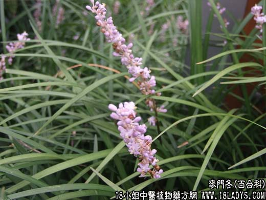

【中药概述】
麦门冬为百合科草本植物麦冬的块根。甘、微苦，微寒。归肺、心、胃经。
1．滋阴润肺：用于阴虚内热，烧灼肺津，肺阴不足的燥咳痰粘、劳热咳嗽等，常配桑叶，杏仁，沙参，阿胶珠，枇杷叶，天冬等，用治肺结核、支气管炎、百日咳等。如（<张氏医通>二冬
膏）。
2．清热养阴：用于热伤胃阴，口渴咽干、大便燥结等，如（增液汤）、（<温病条辨>益胃汤）。
3．清心除烦：用于温病热邪扰及心营，心阴不足，心烦不眠、心悸、心慌等，常配黄连，阿胶，贝母，生地，元参，丹参，珍珠母，远志等。
4．润肺利咽：用于肺热阴伤，咽喉干痛，声哑失音、舌燥口渴等，可配元参，生地，桔梗，甘草，山豆根，金果榄，知母等。
【药效鉴别】
麦门冬与天门冬养阴润燥之功相似，配伍能增强作用。麦冬偏于养心阴肺阴，天冬长于滋肺阴肾阴。
【应用与配伍】
1．用于肺阴不足，而有燥热的干咳痰粘、劳热咳嗽等。能养阴、清热、润燥。治燥咳痰粘，咽干鼻燥，常与桑叶、杏仁、阿胶等配伍，如清燥救肺汤；治劳热咳嗽，常配天冬，如《张氏医通》二冬膏。
2．用于胃阴虚或热伤胃阴，口渴咽干，大便燥结等。能益胃生津，涧燥。治热伤胃阴的口渴，常配玉竹、沙参等，如益胃汤；治热病津伤，肠燥便秘，常与玄参、生地黄配伍，如《温病条辨》增液汤。
3．用于心阴虚及温病热邪扰及心营，心烦不眠，舌绛而干等。能养阴清心，除烦安神。治阴虚有热的心烦不眠，常与生地黄、酸枣仁等同用，如天王补心丹；治邪扰心营，身热烦躁，舌绛而干等，常配黄连、生地黄、竹叶心等同用，如清营汤。
【药理作用】
1．麦冬注射液对小鼠在低压缺氧条件下，明显提高耐缺氧能力。
2．麦冬根注射液低剂量（25％，1.5ml）对离体豚鼠心脏冠脉流量增加54.59％，心收缩力增强；在体兔静脉注射2.5g／kg，心收缩力增强，大剂量20g／kg时产生心律失常；另能显著对抗垂体后叶引起的大鼠心电图T波变化并能降低心律失常发生率。
3．麦冬能保护心肌缺血、缺氧性损害，改善心脏血液动力学效应。
4．麦冬注射液加小剂量硫酸镁可预防心肌梗塞后心律失常的发生，降低心肌耗氧量，增加心肌能量供给，限制心肌梗塞范围。
【化学成分】
含沿阶草皂甙甲、乙、丙、丁，多量粘液质、多量葡萄糖、维生素A等。
【用量用法】
10——15g，水煎服。
【使用注意】
风寒痰饮湿浊之咳嗽和脾胃虚寒之泄泻忌用。《药性纂要》：“胃寒而多湿痰者勿用。”《本经逢原》：“风热暴咳，咸非所宜。麻疹咳嗽，下可误用。”
【附】
朱拌寸冬：1.心烦，常与黄连，生地，玄参，竹叶同用。2.失眠，常与丹参，百合，酸枣仁同用。